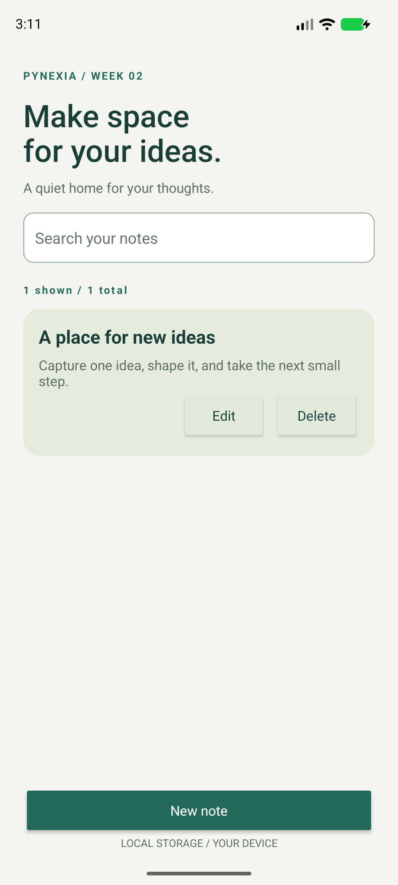
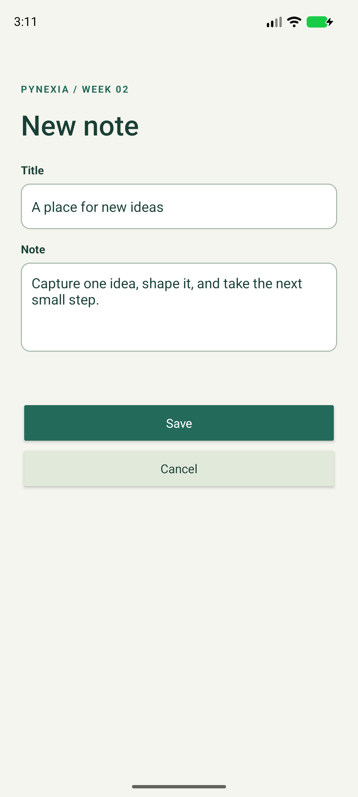

Native Android · Java + XML
Notes App
A quiet home for your thoughts.
Create, view, edit, search and delete personal notes in a native Android app with a custom RecyclerView adapter and SQLite persistence.
Project showcase · Android 8.0+ · Evaluation build.
This page is not an Android emulator.

01 / Implementation
Built around the assignment
Week 2: lists, adapters, collections and local data persistence.
Read the bilingual implementation report (PDF)Lists and models
Entry models, a custom ListAdapter, DiffUtil and ViewHolder render the note list. Stable database IDs keep records distinct even when titles match.
Local CRUD
SQLiteOpenHelper stores title and full text. A single background executor serializes reads and writes. Viewing opens the complete note; deletion requires confirmation.
Input and lifecycle
Title: 1-120 trimmed characters. Note body: required, up to 10,000 characters. Search is literal and case-insensitive. Editor drafts and in-flight save state survive Activity recreation.
02 / In the app
Actual screens. Verified flows.
Captured from the native Android app. Select a screenshot to see it at full resolution.



03 / Try it
A short review walkthrough
- Tap New note. Try saving empty fields, then enter a title and body.
- Save and select the note to read the full content.
- Edit the note, search for part of its title or body, and reopen the app.
- Cancel a deletion to keep the note, then confirm deletion to remove it.
Build and run from source
Open the repository root in Android Studio. Use SDK 35 / Build Tools 35.0.0 and JDK 17 or 21. Sync Gradle, then run the notes module. Initial sync needs internet.
Verification / 2 November 2026
Checks with documented limits
Validation boundaries, literal search, SQLite CRUD and close/reopen persistence, UI add/edit/search/delete, cancellation and editor recreation.
4 JVM tests and 3 device tests passed. Lint: zero errors, 18 warnings without suppression.
Pixel 8 emulator, Android 17 / API 37 (37.1 image), x86_64. No physical-device or API 26 test run.
Inspect verification resultsشرح التمرين
يتيح تطبيق الملاحظات إضافة عنوان ونص، وعرض الملاحظة كاملة وتعديلها وحذفها مع تأكيد الحذف. تظهر البيانات في قائمة بمحوّل مخصص وتُحفظ في قاعدة بيانات محلية. يدعم البحث في العنوان والنص، ويحافظ على مسودة التحرير عند تدوير الشاشة.
04 / Submission kit
Ready for the project form
Copy the links and notes, then attach the ZIP or PDF. This page does not submit to Pynexia.